un mapa de nuestro cielo
Nuestra historia,
escrita entre estrellas
Cada capítulo es una noche que decidimos guardar para siempre.
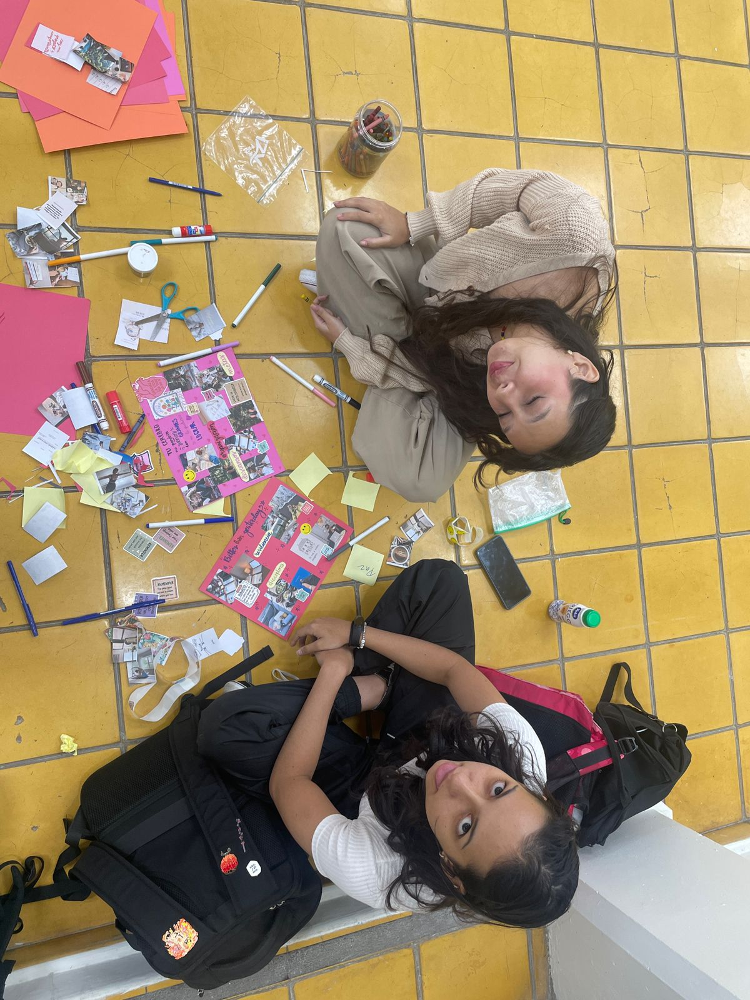
Míranos, qué lindas
Haciendo vision boards juntas. Bueno... tú haciéndolos y yo admirando todo lo que haces, porque las manualidades no son precisamente mi fuerte jsjs. Pero al final eso es lo de menos; lo más bonito es imaginar, planear y soñar con todo lo que nos espera juntas. :3
Besitoooo
Porque tus besos son de mis cosas favoritas. Asi que sigue llenándome de besitos y de paso con labial para que todo el mundo sepa que tengo la suerte de andar con una princesa.
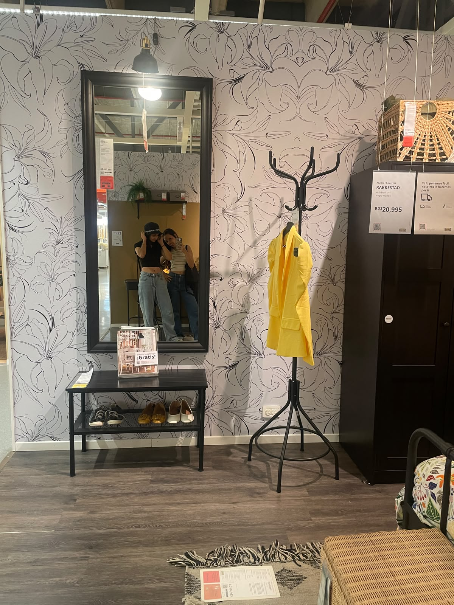
Algún día
Paseando entre muebles e imaginando cómo sería decorar nuestro hogar juntas. BTW nos vemos demasiado lindas juntas jijiji.
Mis ojos no mienten
No me había dado cuenta hasta que vi este video. Ahora entiendo que así se ve alguien completamente enamorada. Y sí... esa soy yo mirándote con ojitos de amor.
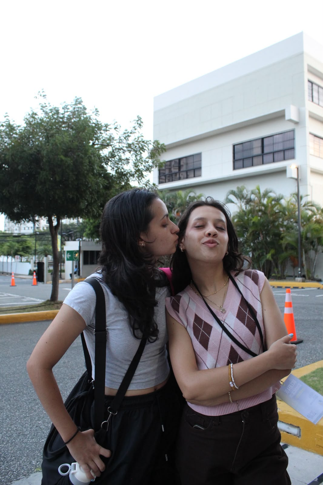
Ven acá
Porque creo que nunca me voy a cansar de darte besitos. Siempre voy a querer robarte uno más, aunque ya te haya dado cien. :b
Qué linda te ves
Me dio muchísima ternura cómo te apenaste cuando notaste que te estaba grabando. Pero tenía que hacerlo; verte tan preciosa con las flores que te regalé era la combinación perfecta para hacerme feliz.
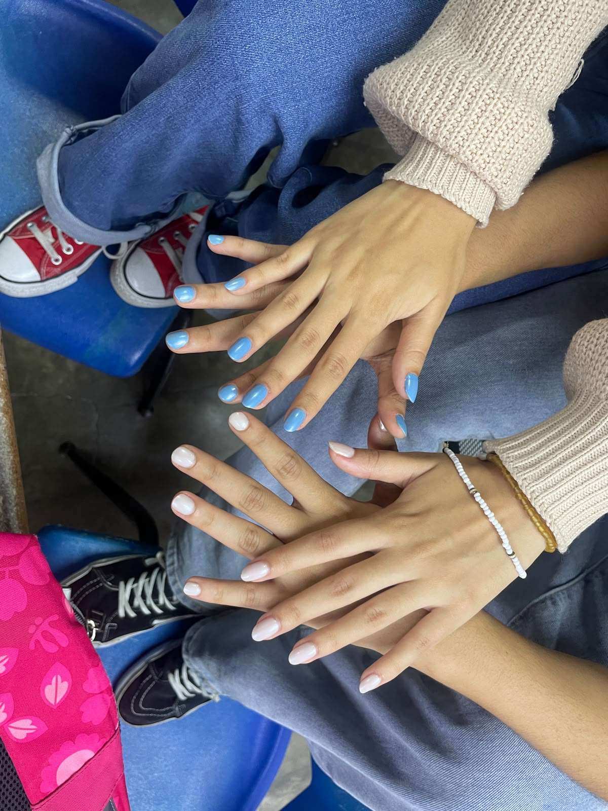
Combinaditas
No sé por qué me hace tan feliz combinar contigo, pero supongo que es porque cualquier detalle, por pequeño que sea, se vuelve especial cuando lo comparto contigo.
Tu lienzo
Podrás pintarme el brazo, llenarme de labial o despeinarme todo lo que quieras. Si eres tú, nunca me voy a quejar. Si quieres volver a usar mi brazo como libreta, yo feliz. jsjs
un archivo cósmico
Así veía la NASA el universo ese día
Mientras nosotras vivíamos nuestra historia, el universo también dejaba su propio registro.
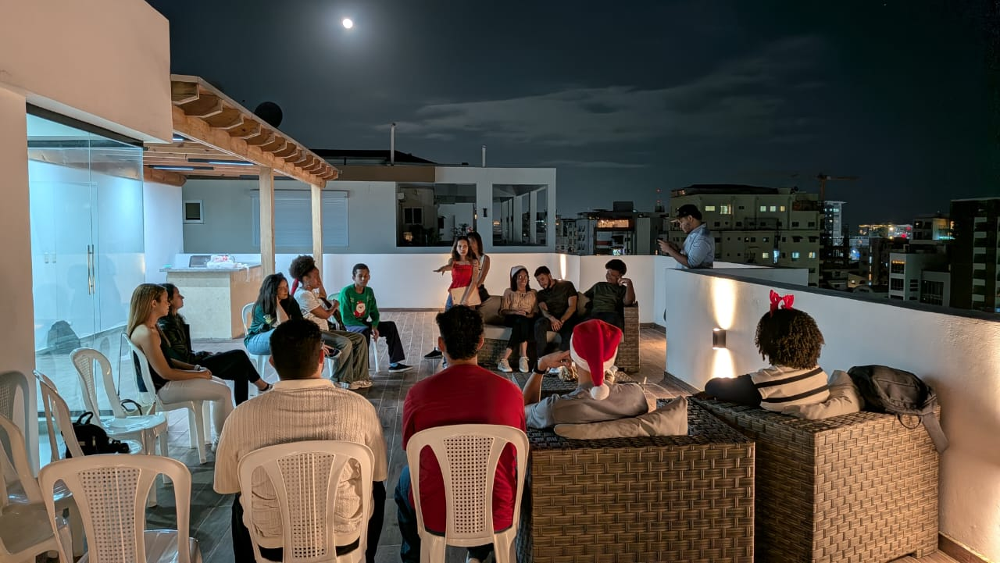
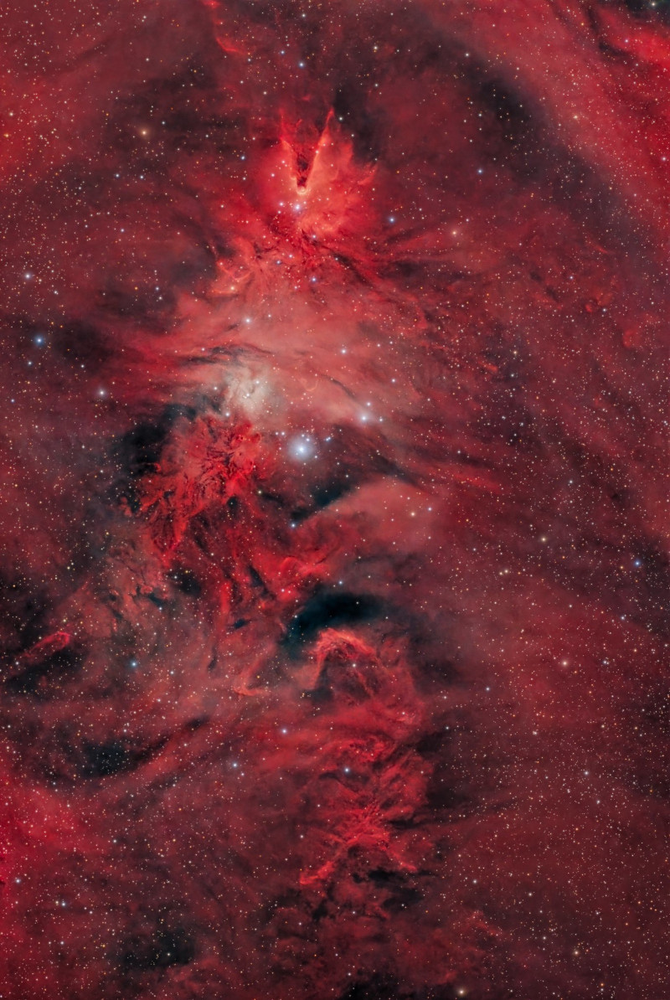
05 / 12 / 2025
Donde nacen las estrellas, el polvo y la luz pintan un hermoso rojo cósmico, igual que el rojo que hizo imposible dejar de mirarte aquel día.
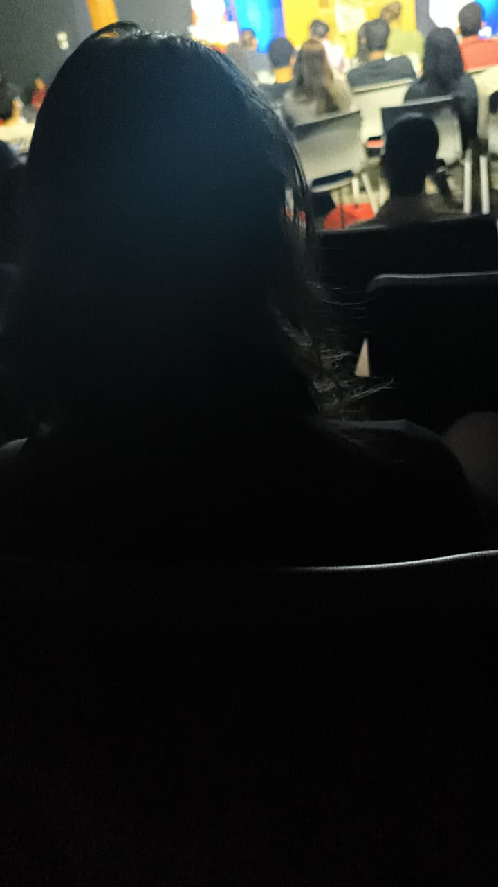
24 / 03 / 2026
La gravedad no es igual en toda la Tierra: cambia ligeramente según el lugar debido a la distribución de la masa bajo la superficie, igual a como cambiaste mi gravedad al hablar conmigo por primera vez.

15 / 04 / 2026
La ISS pasó justo frente a la Luna, un encuentro breve y preciso, igual al momento en que nuestras miradas y nuestros sentimientos coincidieron cuando te dije que me gustabas.
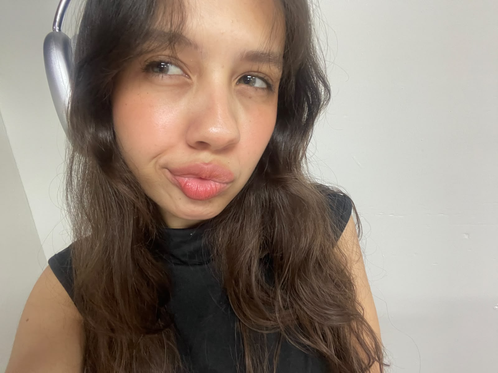
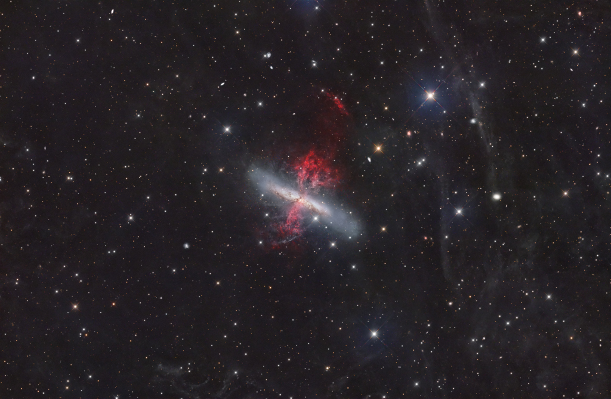
17 / 04 / 2026
El universo nos mostró su belleza más intensa ese día, igual que tu sonrisa cuando nos dimos nuestro primer beso.
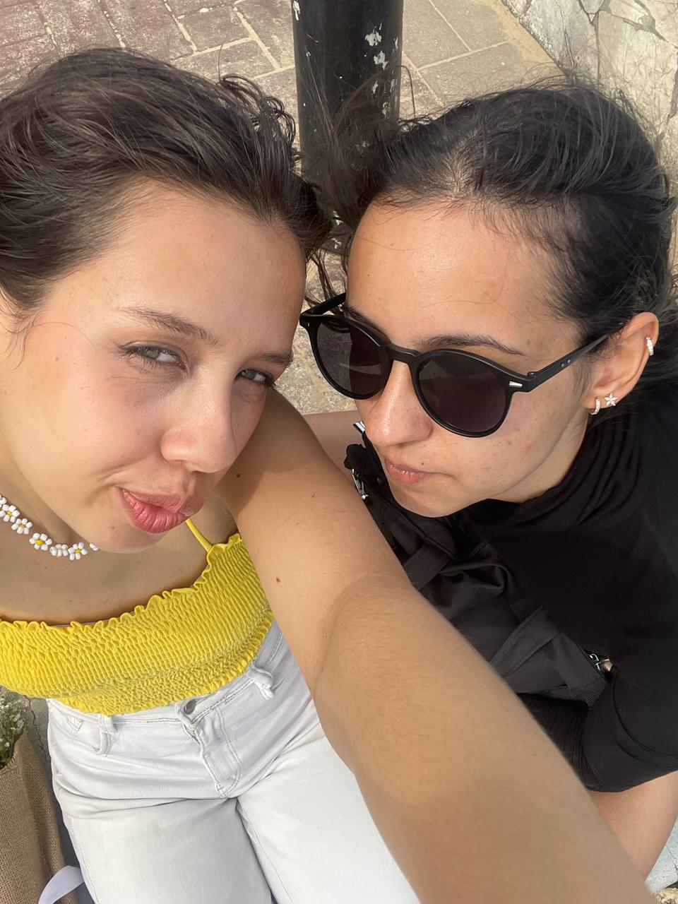
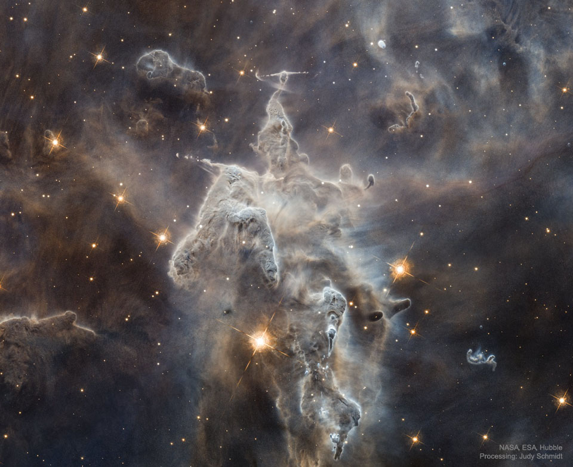
26 / 04 / 2026
En una enorme montaña cósmica de gas y polvo, una estrella comenzaba a abrirse paso con su propia luz, igual a como ese día empezaste a iluminar mi vida en nuestra primera cita.
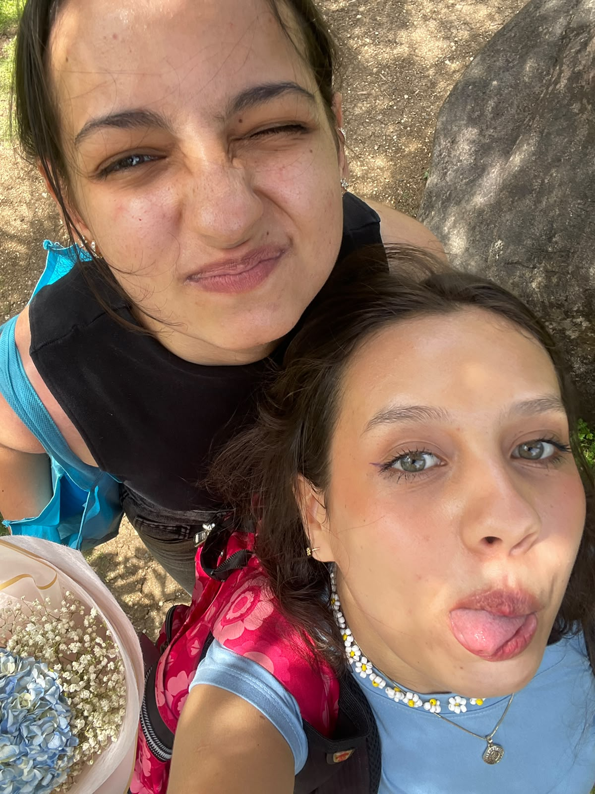
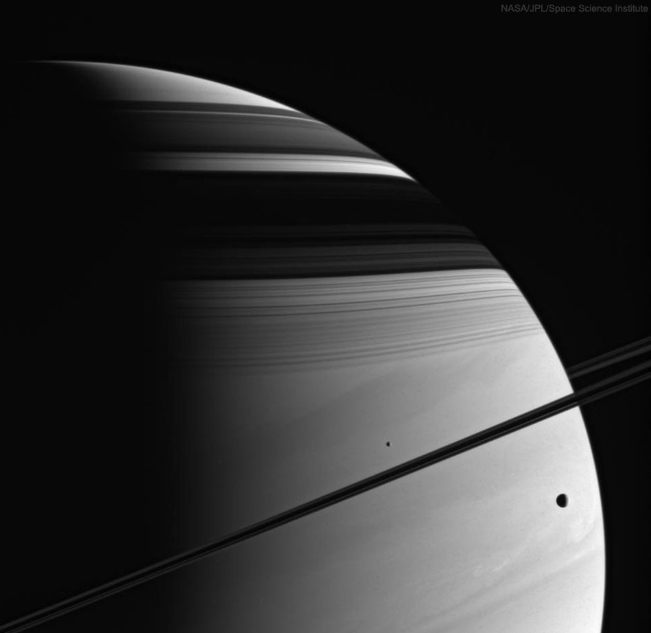
16 / 06 / 2026
Cassini fotografió a Saturno rodeado por sus lunas y sus anillos; el universo también parecía celebrar que, por fin, nosotras empezábamos a girar en la misma órbita cuando hicimos novias.
para ti
Querida Victoria...
Ya tenemos un mes de novias, y pasó suuuper rápido. Aunque nos conocemos desde hace unos meses más, quise revivir algunos de los recuerdos más bonitos que hemos construido desde entonces hasta hoy. El universo es inmenso y sigue expandiéndose cada día; de la misma manera, quiero que nuestros recuerdos, nuestros sueños y nuestra vida juntas no dejen de crecer. Habrá días fáciles y otros no tanto, pero mientras sigamos eligiéndonos, no habrá distancia, obstáculo ni tormenta que no podamos atravesar juntas. Este apenas es el primer capítulo de una historia que espero escribir contigo por muchísimo tiempo.
Con todo mi cielo, Diana
Si has llegado hasta aquí...